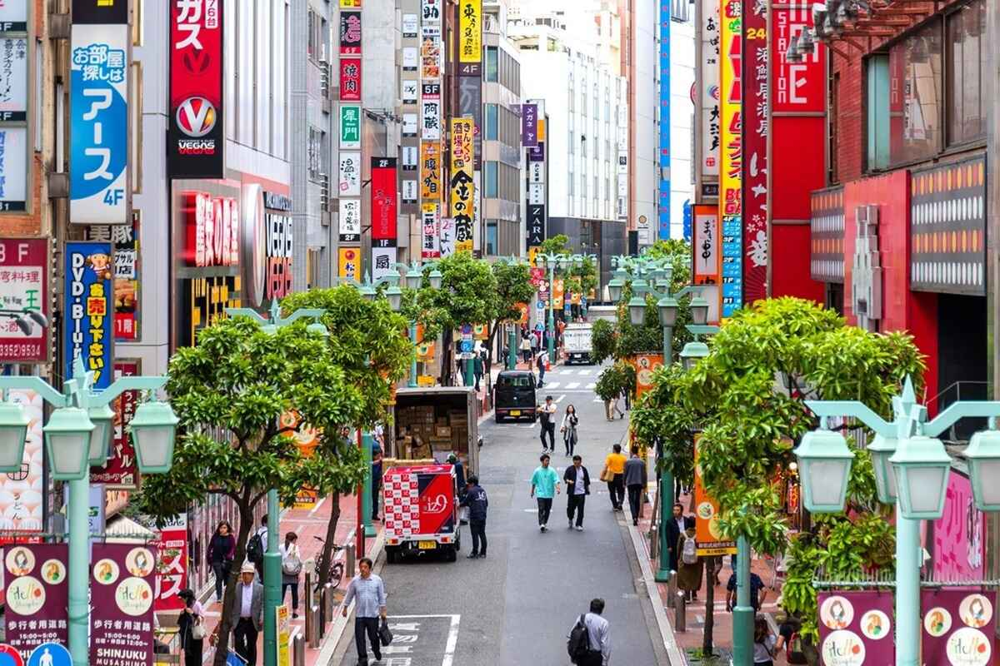

Business

Tokyo’s economy is growing steadily with a 12% rise in foreign investment in early 2025. Major companies like Toyota and Sony are expanding in tech and green energy, supported by government initiatives promoting innovation. Tokyo is emerging as a key global hub for fintech and AI startups, boosting consumer confidence and job growth.
Sports

Tokyo FC secured a dramatic 2-1 win over Yokohama, strengthening their bid for the J-League title. The Tokyo Marathon attracted over 30,000 runners, highlighting the city’s sports enthusiasm. Preparations for international events and youth sports programs are intensifying, promoting fitness and athletic excellence.
Food
Tokyo’s culinary scene is thriving with new Michelin-starred restaurants and innovative fusion dishes. The popular Ramen Festival attracts huge crowds, while sustainable and locally sourced dining options are becoming increasingly popular among residents and visitors alike.
Weather

Tokyo is preparing for heavy rains this weekend due to a tropical storm in the Pacific. Authorities have issued flood warnings and safety advisories, with conditions expected to improve by mid-next week bringing sunnier skies and lower humidity.
Education

The University of Tokyo launched a cutting-edge AI research program, while citywide schools are adopting digital classrooms with tablets to foster inclusive learning. Education reforms aim to encourage critical thinking, with teachers receiving new training and parents expressing optimism.
Current Affairs

Tokyo has implemented new subway safety regulations with increased surveillance and emergency staff. Meanwhile, city council debates intensify over climate legislation, including proposed bans on certain vehicles by 2030, drawing mixed public opinions.
Entertainment

Tokyo’s entertainment scene is buzzing with a new hit anime topping global charts, the Tokyo Film Festival showcasing acclaimed films, and the return of live concerts at full capacity. The Shibuya district is experiencing a cultural revival with art installations and performances gaining momentum.
Health
Tokyo hospitals report a steady decline in COVID-19 cases as vaccination rates surpass 90%. Focus is shifting to mental wellness programs and community fitness initiatives for older adults, including free yoga and walking clubs.
Technology

Tokyo is emerging as a global leader in robotics and automation, with new tech expos highlighting humanoid assistants and AI-driven smart homes. Startups thrive with international investment, and schools are introducing coding classes early on.
Lifestyle
Minimalism and Zen-inspired living are trending among Tokyo’s youth, boosting demand for multifunctional furniture and mental wellness apps. Harajuku remains a global fashion hotspot blending tradition with bold futuristic styles.